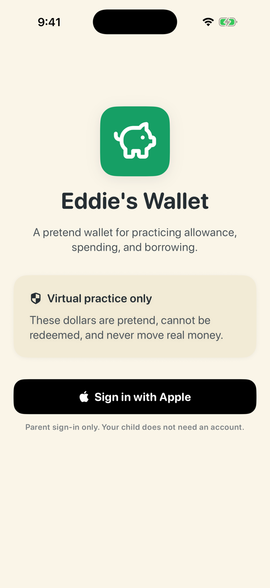
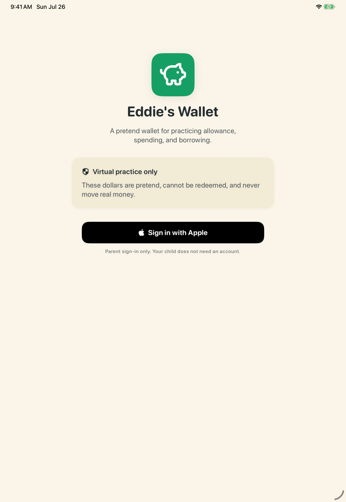

Eddie's Wallet
Eddie's Wallet is an unfinished native SwiftUI frontend MVP for iPhone and iPad: a calm, parent-managed pretend wallet that helps one child practice allowance, spending, borrowing, and repayment. This repository exists so you can read the source, build it in the iOS Simulator, and follow the accompanying code walkthrough. It is not a download, an App Store product, a released app, or a live, end-to-end-verified financial service.
Every dollar the app displays is virtual, pretend, and nonredeemable. No real money ever moves through Eddie's Wallet. There are no banks, cards, payment rails, or cash-out paths. One signed-in parent records every change (allowance, deposits, withdrawals, loans, repayments). The managed child profile is a read-only view: the child has no independent account, login, or way to change the wallet.
Who this is for: developers and reviewers who want to explore a small, dependency-free SwiftUI client, and anyone following the product concept in the product requirements document. If you are looking for an app to install for your family, this is not that yet.


Both screenshots show the signed-out welcome experience built from this repository. No family data exists in a fresh install.
What exists today
- A native SwiftUI iOS/iPadOS app (
EddysWallet.xcodeproj) targeting iOS 17.0+, iPhone and iPad, with no third-party dependencies.
- Parent and read-only child wallet views, money-event flows, a starter lesson path, offline/pending states, and a local parent PIN gate, implemented against the product requirements.
- Unit and contract-style transport tests (currently 23) that run entirely against injected fakes and never call a live service.
- A copied web design system and click-through prototype under
design-system/, kept as visual reference material; the native app is the maintained implementation.
What does not exist: releases, tags, an App Store listing, CI, a privacy manifest, or verified live sign-in. See Known limitations.
Getting started
Prerequisites: a Mac with Xcode 26.4 or later (this repository was last verified with Xcode 26.4 and the iOS 26.4 simulator runtime). There are no package-manager dependencies to resolve, and no Apple developer account is needed for simulator builds and tests.
Clone anonymously over HTTPS:
git clone https://github.com/kunchenguid/eddies-wallet.git
cd eddies-wallet
Open EddysWallet.xcodeproj in Xcode and use the shared EddysWallet scheme, or work from the command line. Run the test suite in the iOS Simulator:
xcodebuild -project EddysWallet.xcodeproj -scheme EddysWallet \
-destination 'platform=iOS Simulator,name=iPhone 17 Pro,OS=26.4' test
Build a signing-independent Release binary for the simulator:
xcodebuild -project EddysWallet.xcodeproj -scheme EddysWallet \
-configuration Release -destination 'generic/platform=iOS Simulator' \
CODE_SIGNING_ALLOWED=NO build
If your installed simulator runtime differs, substitute any available iPhone destination (xcodebuild -project EddysWallet.xcodeproj -scheme EddysWallet -showdestinations lists them). The declared deployment target is iOS 17.0, but recent verification used iOS 26 simulators.
Signing expectations: building and testing in the simulator requires no signing setup. Actually exercising Sign in with Apple requires membership in the Apple Developer team that owns the app ID, as described in EddysWallet/README.md; that is an external prerequisite this repository cannot provide, and nothing in this repository requires it for local builds or tests.
Architecture boundary
This repository contains only the client. The app is designed to talk to a separately maintained, privately operated service through a small versioned HTTP API; the service's source, operations, and credentials are not part of this repository, and no private access is needed to build or test the code here. APIWalletRepository implements the client side of that contract, and MockWalletRepository backs previews and tests. The service is authoritative for all wallet data; the client never treats local state as accepted money. Details are in EddysWallet/README.md.
Project layout
| Path |
Contents |
EddysWallet/ |
App source: views, models, API client, design tokens, and a client README covering configuration, keychain use, and signing |
EddysWalletTests/ |
Unit and transport-contract tests |
EddysWallet.xcodeproj |
Xcode project with the shared EddysWallet scheme |
docs/ |
Product requirements, video claims checklist, and screenshots |
design-system/ |
Copied web design system and prototype, kept as visual reference |
Known limitations
- This is an unfinished MVP. Live Apple sign-in and the full family flow against the production service have not been verified end to end; verification so far covers local builds, the test suite, and the signed-out UI.
- There is no released, downloadable, or App Store-ready build: no marketing version, no privacy manifest, no signed archive evidence, no release notes, and no tags.
- There is no CI; test results are local evidence only.
- The declared iOS 17.0 minimum has not been exercised on an iOS 17 simulator runtime recently.
- The
design-system/ prototype is unmaintained reference material and may not run as-is.
- Privacy, retention, export, and deletion decisions required for a public launch remain open in the product requirements.
Support and security
- Questions about building, the source, or the documentation: open a public GitHub issue. See SUPPORT.md.
- Security or privacy findings, especially anything touching children or family data: use the private reporting route in SECURITY.md. Please never post sensitive findings publicly.
Documentation
License
Eddie's Wallet is licensed under the MIT License, Copyright (c) 2026 Kun Chen.